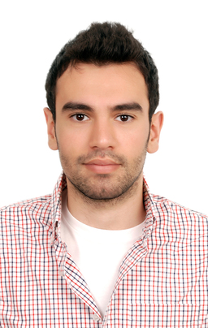

Currently, Rami Chehab is a post-doctoral research fellow at Heriot-Watt University in the School of Mathematical and Computer Sciences in Edinburgh. He, along with other researchers from multidisciplinary universities ranging from Cass Business School in London to the University of Geneva in Switzerland, are jointly working on a project for the Institute and Faculty of Actuaries (IFoA) known as "Minimising Longevity and Investment Risk while Optimising Future Pension Plans."
The is was Edinburugh,

Dr Chehab holds PhD (2017) and MSc (2013) in Economics and Econometrics (Theoretical and Applied Statistics) from the University of Exeter. Dr Chehab also has diverse knowledge in both industry and academia. Where he held many internships positions and teaching roles in a number of university and ranges of subjects in economics and finance ranging from Microeconomics, Macroeconomics, Applied Econometrics, Theoretical Econometrics, Portfolio Theory, Mathematics and Statistics for Business, and Financial Economics.